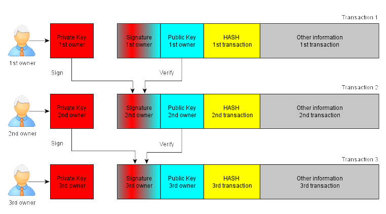
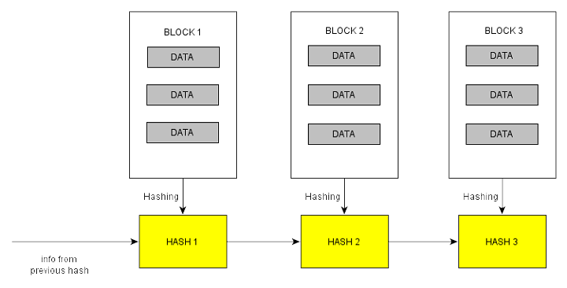
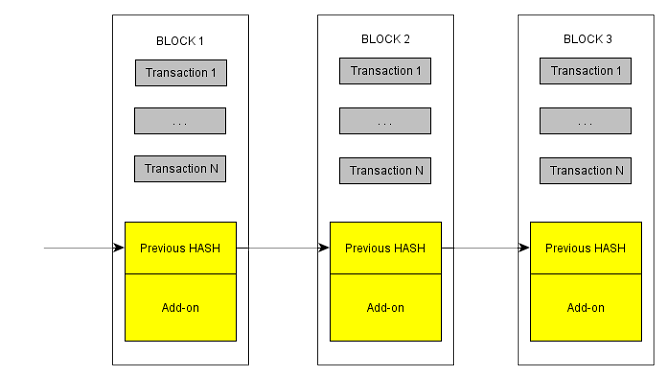
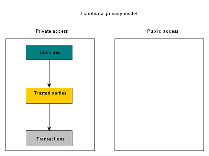
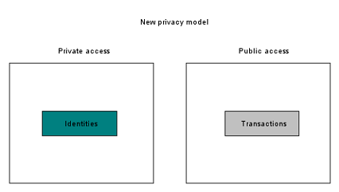

Annotation
The system of electronic money, which has a fully peer-to-peer structure, allows you to make
transactions
over electronic assets between members of the network without intermediaries, excluding any
financial
institutions. The use of electronic digital signatures partially solves the problem of excluding
intermediaries, but this method has a serious drawback, such as the need for a third party to
control the
double spending of money using a peer-to-peer network. This document proposes the use of
peer-to-peer
network for decentralization, which in turn solves the problem of double spending. Time stamps
are
placed on
transactions. They put special server timestamps. Transactions based on timestamps connected in
chain,
Proof-of-work based on hashing. An entry in the register are formed in this way, in this regard,
by
not
performing full computations, they cannot be changed. Updated the registry – the longest chain
of
transactions is proof of the sequence of events. At the same time, the same chain of
transactions is
proof
that the most powerful computing segment of the network worked with it. This is protection from
hackers who
could attack the peer-to-peer network – a majority of CPU power is controlled by nodes to which
there is
trust. The structure of the network is characterized by its simplicity: the transmission of data
packets
occurs on the principle of the least path. Nodes can either leave the network or reconnect to it
at
any
time. When connected, they restore their longest transaction chain.
Introduction
Trading on the Internet (or Internet Commerce) is based on the principle of a third party. The
implementation of this principle requires different financial institutions to act as
intermediaries.
The
participants of Internet Commerce trust these intermediaries, and it leads to certain problems.
This
scheme
prevents the implementation of irreversible transactions. The price of the intermediary services
actually
sets the minimum transaction cost, making some operations economically unprofitable. This is
especially true
for infrequent and small transactions. Also, due to the lack of mechanism for carrying out
irreversible
transactions, the buyer is forced to pay even more for services that he does not need to provide
the
seller
with even more information. It can be stated that there is no mechanism for direct transactions
with
electronic money.
The solution to this problem is a system that uses cryptographic mechanisms for transactions and
thus
excludes a trusted third party. This paper provides a description of such a system. The order of
transactions in the system is determined by the timestamp server, and the security of the system
is
ensured
by the fact that under the control of the nodes acting honestly, there is a greater number of
computing
power.
THE PRINCIPLE OF TRANSACTIONS
To describe the mechanism of transactions, imagine that one unit of electronic money is a
sequence
of
digital signatures. According to the standard digital signature scheme, the next owner, when
making
a
payment, must sign the hash of the previous transaction and the public key of the future owner
and
transmits
this information along with the payment. In turn, the recipient can validate each signature with
a
public
key to authenticate the entire transaction chain.

One disadvantage is that the recipient cannot determine how many times the previous owner spent
the
money
received as a result of the payment received. You can offer a traditional solution, in
particular to
determine the trusted party or the company-Issuer, which will identify each transaction.
However,
this
method makes the system centralized.
It is necessary to provide the recipient with the opportunity to know and understand that none
of
the
previous owners have signed a transaction preceding the time of the one that is in the chain of
the
coin
sent to him. This system is implemented so that only the first transaction of several is true,
which
solves
the problem of double spending of the sent coin.
COMPONENTS OF THE CRYPTON SYSTEM ARCHITECTURE
The principle of operation of the
network
A node that initiates a transaction sends the generated transaction to all nodes. Each of the
nodes
combines
the transactions that came to it into blocks, and then selects a hash for the block, according
to
the
complexity of the calculations. After the host has found the hash, the block is sent to all
hosts
over the
network. Other nodes can accept such a block only if all transactions in it are correct and do
not
use the
money already spent. The nodes agree with the formed block by means of two actions:
- ⦁ Get started with the following block
- ⦁ Use the hash of the previous as the new initial data
The longest chain of transaction blocks is considered to be true among all participants of the
network. When
you add new transactions, the nodes work with it. The following situation may occur: multiple
hosts
publish
different versions of chains at the same time, and network members may receive different
versions of
the
chain. However, other versions of each of the nodes maintain. As soon as the new block continues
with any
version, the other versions are removed and all nodes start working on the longest chain.
The mechanism of mailing is quite loyal. Thus, only a sufficient number of nodes should be aware
of
transactions in order for it to fall into the block and then into the chain. The nodes miss some
kind of
block requests information about him to fill out his version of the chain.
The first transaction in the block is a special one that creates a new cryptocurrency. Emission
rights to it
belong to the Creator of the block. Network members who are not malefactors, is encouraged and,
thus,
support the work of the ad hoc network. At the same time, the question arises of the
distribution of
the
money supply in accordance with resources: processor time and electricity.
The system also provides a commission for the transactions being created. The commission in such
a
system is
the difference between the input and output payment amounts. The resulting amount is added to
the
main bonus
for the block found in the first transaction. In the end, the size of the money supply reaches
its
maximum.
After that, the commission will remain bonuses.
This scheme helps to reduce fraud, as to make any changes to the transaction blocks, in
particular a
refund
or cancellation; the attacker must concentrate in their hands a huge amount of computing power.
The server timestamp
The timestamp server is a very important component in the system architecture. This server
hashes a
block of
data and sets a time stamp, which means that the marked data existed and hit the block hash.
Each
hash of
the current block includes the previous label. This is how the chain of blocks is built.

The principle of "Proof of work"
A proof-of-work (PoW) system (or protocol, or function) is an economic measure to deter denial
of
service
attacks and other service abuses such as spam on a network by requiring some work from the
service
requester, usually meaning processing time by a computer. A key feature of these schemes is
their
asymmetry:
the work must be moderately hard (but feasible) on the requester side but easy to check for the
service
provider. This idea is also known as a CPU cost function, client puzzle, computational puzzle or
CPU
pricing
function.
The search for a value with the appropriate hash occurs by iterating through the value of the
iterated
addition field (nonce) in the data block. Once a block that satisfies the condition is found,
its
contents
cannot be changed without having to perform all the work again. And if it is not the last in the
chain, this
work includes the re-allocation of all blocks following it.

This scheme also defines the version of the block chain that is accepted as the true majority of
the
network
participants. Here, the «consent» to the processing of a chain is not the IP address, but the
processor. If
a greater amount of computing power will be concentrated in nodes that are not attackers, the
chain
of
transactions generated by these nodes is true.
The complexity of the hash algorithms have to change because of fluctuations in the number of
working nodes
at a given time and computing power.
Privacy
It is enough to compare with the traditional model, where banks are involved. The following
persons
have
access to information:
- ⦁ Participant's parties
- ⦁ Trusted third party
Therefore, you cannot publish transactions publicly, but you can make public keys anonymous.
Available all
the details of the payment, however, without disclosing the identity.


The solution in the new model is to generate a pair of keys: public and private. This decision
will
prevent
the linking of payments with common sender or recipient.
Keys
Each user of the system can generate an unlimited number of key pairs (ECDSA algorithm with
secp256k1
parameters). The private key size is 256 bits and the corresponding public key size is 512 bits.
Basic use of keys, creation of address and confirmation of eligibility of the formation
transactions. But
they can also be used to digitally sign or encrypt correspondence.
Creating a new key pair is stand-alone and does not require a network or Internet connection.
The
generated
keys are usually stored in a special encrypted wallet file.dat ("wallet"). The user comes up
with a
password
only to access the information from the file "wallet.dat", that is to access your key pairs. To
dispose of
coins, this file is not required — in most cases, it will be sufficient to obtain a private key
in
any way.
Addressing
Addresses are created by generating an asymmetric cryptographic key pair, which does not require
an
Internet
connection. A person can have an unlimited number of addresses, creating them at will. Each
possible
address
corresponds to the balance expressed in coins. All addresses with a nonzero balance recorded in
a
decentralized block chain transaction is protected. When you create an address its balance is
always
zero
and can be recharged by either sending coins to other addresses or by creating new coins and
fees at
the
expense of mining.
The address is a sequence of bytes received as a result of the public key conversion. The most
common
encoding Base58 address is written as a string up to 34 letters of the Latin alphabet and
numbers,
for a
person is a chaotic set of characters. Addresses with a small number of non-random symbols can
be
obtained
by brute force. The first character of the address is always a unit for regular addresses or a
triple for
addresses created using multisigned. Part of the characters is the checksum that verifies the
correctness of
the main part of the address.
THE ADVANTAGES OF CRYPTON
Periodic memory cleanup
There are situations when transactions before the newly added, deleted in order to free up disk
space. This
occurs when an old enough block accepts the last transaction. A Merkle hash tree structure is
implemented to
store the hash, and only the root of the Merkle tree is placed in the block hash to implement
space
cleanup.
The size of old blocks can be reduced by removing unnecessary branches of this tree, it is not
necessary to
store intermediate hashes.
Merkle tree
Simplified payment verification
Transaction verification is possible without starting a fully functional node. The user only needs to store block headers of the longest chain he has received from other nodes and request a hash subtree for the required transaction. He cannot check the correctness of the transaction on their own, but getting a link to the block in which it is located, he can make sure that this block and all subsequent accepted and confirmed by the network.
Such a method of verification can be relied upon as long as the network is at least half under the control of honest participants, that is, until the attacker takes possession of large resources. Normal nodes can check transactions on their own, but if the attacker generates the longest chain of blocks, they can compromise the simplified scheme with their fabricated transactions. One of the strategies to counteract this can be sending alarms from the usual peers who receive a "false" block. Such a signal will cause the client program to load the block completely to confirm the incorrect data. Businesses that receive frequent payments will probably be to connect in normal mode for more independent security and quicker verification.
Longest Proof-of-Work Chain
The structure of the transaction
There are inputs and outputs in the transaction structure. This exists in order not to create a special transaction for each coin that can be sent. As a rule, this scheme is implemented as follows:
- ⦁ Inputs: sent small amounts or large payments
- ⦁ Exits (no more than two): direct payment and return delivery
There is no need to obtain a full and independent copy of the transaction history.
CRYPTON OVERLAY SMART CONTRACT NETWORK
Overview
Smart warrantors provide a simple, flexible way to implement "smart contracts", which encode business logic, laws, and other agreed-upon rules. Smart warrantors build on the idea of warrantors, or entities that provide smart contracts with information about the state of the outside world, and combine information gathering with contract code execution. In such a system, rules can be written in any programming language and contracts can interact with any service that accepts cryptographically signed commands. This includes, but is not limited to, cryptocurrency networks. We introduce an implementation of smart warrantors, called Cryptonet, which uses Google’s Native Client for code sandboxing.
In this paper, we begin with some definitions and background on the concept of smart contracts. From there, we move into our proposal for smart warrantors and describe some of the technical implementation details and the security threat model for the system. In the final sections, we describe some of the financial and non-financial applications and the greater potential for this approach to smart contracts as a whole.
Definitions
Smart Contract
The Cornell Legal Information Institute defines a contract as:
An agreement creating obligations enforceable by law. The basic elements of a contract are mutual assent, consideration, capacity, and legality […] Possible remedies for breach of contract include general damages, consequential damages, reliance damages, and specific performance.
Smart Contracts are programs that formally encode certain conditions and outcomes. The code is agreed upon by the contracting parties in advance and must be faithfully executed by a disinterested, neutral system.
The three key steps in developing and utilizing a smart contract are:
Translating the terms of the contract into code. Since digital systems are deterministic, all possible outcomes of a contract, including penalties for breach of contract and referral to a (non-deterministic) arbitrator, are specified explicitly.
Agreeing on the precise code that will be run. In practice, parties would usually build their contract from widely used configurable contract modules. Once the contract is agreed upon, it is very important to ensure that the same code actually ends up being executed. See sections Deterministic Compilation and Unique Secret and Key Pair.
Executing the code in a trustworthy manner. The code must be run by an impartial third party or by a group of independent entities that are highly unlikely to collude. Smart contracts can also be used without ever actually executing the code; see the section on Offline Contracts for more details on this use case.
Ultimately the benefits of using smart contracts instead of traditional contracts come from the increased speed, efficiency, and trust that the contract will be executed exactly as agreed.
Warrantor
Some smart contracts systems, including the one built into Bitcoin, are strictly deterministic. In order to interact with the real world, these systems rely on cryptographic signatures submitted by outside systems called "warrantors."
Warrantors are trusted entities which sign claims about the state of the world. Since the verification of signatures can be done deterministically, it allows deterministic smart contracts to react to the (non-deterministic) outside world.
Smart Warrantor or Contract Host
Smart warrantors are explained in the section following the definitions, but we should note that we use the terms "smart warrantor" and “contract host” interchangeably. In this proposal, the hosts that execute the contract code are the same as the “warrantors” that in other systems might only be set up to provide contracts running outside of their systems with information about the outside world.
Contracting Parties
The contracting parties are the people or businesses who agree to use a smart contract to carry out an arrangement. Other relevant, but possibly distinct entities, are the contract author and the contract owner. The contract author is the one who wrote the code, though they may not be involved in the particular arrangement at all. For example, the author could be a developer or group of developers that have published an open source auction contract. The contract owner is the entity that sets it up to be executed by the smart warrantor(s).
Note that the contract host should not be one of the contracting parties or affiliated with any of them.
Public/Private Key Cryptography
Public/private key cryptography enables messages to be encrypted, or translated into a seemingly random set of characters. When a message is encrypted with the public key, only the holder of the corresponding private key can decrypt or decipher it.
Public/private key cryptography also enables the holder of the private key to cryptographically "sign" messages. Anyone can definitively verify that the signature could only have been created by the holder of that private key.
Public/private key cryptography underpins some of the common use cases for smart warrantors, so it may be useful to have a basic understanding of how asymmetric encryption and cryptographic signatures work. For more background, we recommend the Wikipedia articles on public-key cryptography and digital signatures, and this simplified explanation of public key cryptography.
Distributed Networks and Consensus Databases
Although this smart warrantors proposal is independent of all existing distributed networks, consensus databases, and cryptocurrencies, it has been heavily inspired by the concepts underpinning Bitcoin and Crypton. For an introduction to Bitcoin, the peer-to-peer network and digital currency, see bitcoin.org. For more information on Crypton, the distributed protocol for any type of value transfer, see http://crncoin.io
From Warrantors to Smart Warrantors
The concepts of smart contracts and warrantors have existed for some time. Several earlier designs (including Bitcoin) have relied on executing the contracts within consensus networks, leading to the requirement that their execution be deterministic. In this paper we aim to show that placing contract execution in the hands of smart warrantors generalizes and simplifies the system significantly.
The concept of smart contracts is widely attributed to Nick Szabo who, in the late 1990s, argued that formalizing relationships and encoding them in software and hardware would simplify and secure business logic and functionality. He wrote of embedding contractual clauses, such as bonds and property rights. Szabo used the example of the vending machine as a "primitive ancestor" of smart contracts because its hardware and software enforce a simple contractual agreement. Anyone who inserts money will receive a snack in return, even though no explicit contract was ever made with the machine’s owner. Wei Dei also wrote about digital contracts in his B-money proposal of the late 1990s, describing self-enforcing, cryptography-based contracts not too dissimilar to Szabo’s ideas.
Recently, the advent and explosion of interest in cryptocurrencies has spurred a resurgence of interest in smart contracts. Math-based currency networks provide an important building block for smart contracts: valued digital assets that can be transferred with a cryptographic signature. Assets in protocols such as Bitcoin and Crypton are owned by accounts identified by public/private key pairs. Payments are executed when the transaction carries a cryptographic signature that could only have been produced by the holder of the account’s private key. Smart contracts can trivially create such cryptographic signatures and, thus, be designated the partial or sole owner of any type of digital asset.
Unfortunately, cryptocurrency developers have found it challenging to design a system that encompasses both a powerful smart contracts language and a robust consensus system. Bitcoin scripts allow for simple logic to be encoded and executed on the Bitcoin network. However, encoding advanced logic and executing untrusted code have proven more complicated to integrate.
Consensus networks must be conservative about their feature set. Since everyone in the network must agree on each change the technology is relatively difficult to modify or upgrade. The Bitcoin wiki explicitly mentions this concern, saying "Some of the more complicated opcodes [script commands] are disabled out of concern that the client might have a bug in their implementation; if a transaction using such an opcode were to be included in the chain any fix would risk forking the chain." Forking the blockchain, or distributed ledger, means creating multiple competing states of the network, which is a highly undesirable outcome for a consensus-based system.
We argue that it is possible to implement powerful smart contracts in a secure and trustworthy manner without increasing the complexity of existing consensus networks such as Bitcoin or Crypton.
The execution of untrusted code should be decoupled from the consensus databases and other services that track and transfer asset ownership. The separate contract system can handle untrusted code execution and interact with the consensus databases through cryptographic signatures. These signatures are already native to consensus protocols so no modifications are necessary. Decoupling contracts from consensus networks gives the added benefit that contracts can interact with multiple networks at once as well as virtually any type of online service. This means that a single smart contract could interact with Bitcoin and Crypton, web-based services like PayPal, Google, Ebay, etc. or even other Internet protocols, such as SSH, LDAP, SMTP and XMPP.
If the contract execution is decoupled from existing systems, where should the code be run? This is where smart warrantors come in.
Most proposals for smart contracts, even those that are internal to consensus networks like Bitcoin, depend on independent entities to inform contracts about the state of the outside world. Bitcoin contracts rely on "warrantors" to attest to facts from the outside world by introducing signatures into the network if and only if specific conditions are met. Smart warrantors takes this concept a step further to place the untrusted code execution in the warrantors’ hands. The smart warrantors are trusted or semi-trusted entities that can both provide information about the outside world and execute the code to which the contracting parties agreed.
Implementing Smart Warrantors
Smart warrantor implementations could take many different forms. In the following sections we outline some of the elements we see as essential for most, if not all, smart warrantors. Namely, the key components are: securely identifying code, sandboxing code, warrantor APIs, contract hosting and billing models, and contract clients.
We should note that the following sections dive into the more technical details of smart warrantors. Readers who are more interested in the big picture and less interested in those details may want to skip to the last three sections: Offline Contracts, Financial Applications and Beyond and the Conclusion.
Securely Identifying Code
Once contracting parties have agreed on the terms of their arrangement they must translate the rules into code. It is crucial that the parties inspect the proposed code and ensure that it represents the business logic to which they agreed to be bound. It is equally important that they can easily verify that the code uploaded to the smart warrantor(s) is exactly that which they already inspected. This is where deterministic code compilation, hashing, and code reuse with modules come in.
Deterministic Compilation
All parties to a contract have a large stake in ensuring that the final, machine-executable code represents the logic they agreed to. For compiled languages, this means that the source code must be shared along with a reproducible process to compile it to machine code, such as with Gitian. For interpreted languages it is sufficient to share the source code. Either way it is critical that participants agree upon the final instructions that will be executed by the smart warrantor.
Hashing
Cryptographically secure hashes are a convenient way to identify agreed-upon binaries or source code files. Hashing functions take arbitrary amounts of data as inputs and produce a short, fixed-length string of characters that. For practical purposes, this "hash" can be used to uniquely identify any text or data.
Although it might not be strictly necessary, we recommend using collision-resistant hash functions. This means that it would be impractical to attempt to find two inputs with the same output hash. It would be exceptionally difficult to produce two pieces of working code with the same hash, even using a hash function that is only second preimage resistant. However, it would cause serious problems if someone could create two distinct contracts with the same hash. Therefore we recommend hash functions that are second preimage and collision resistant.
Modules
Traditional contracts often share common "boilerplate" elements and smart contracts are no different. Any smart warrantor system is likely to offer some form of code reuse. This adds convenience as well as security.
Many contracts will have relatively simple and easy to understand logic built on top of well-known and widely used modules. Modules could encompass basic functionality, such as mechanisms to connect to Bitcoin or Crypton. They could also include more advanced features such as a standard auction, escrow, or bond implementation. The logic would likely be widely used and verified by many independent parties.
Cryptonet uses modules identified by hashes that can be shared and imported by multiple contracts.
Code Sandboxing
The heart of the smart warrantors concept is the ability for users to agree on the code of a contract and then to upload it to a trusted third party or parties for them to execute it. Smart warrantors must be able to safely execute the user code, which is untrusted and may actually be malicious. Warrantors must protect their own systems and the integrity of the other contracts they are running.
The four most commonly cited methods for sandboxing, or constraining the functionality of, untrusted code are described below. Different smart warrantor systems may choose to use distinct subsets of these options, but they can be layered together for increased security. At the end of this section we will discuss the four methods together and explain our selection of Google’s Native Client for Cryptonet
Virtual Machines (VMs)
Virtual Machines (VMs) are environments that emulate separate computers within a single physical machine. A server or computer can run multiple VMs and each will have its own complete operating system. In most modern implementations, VM security relies on the computer processor’s virtual instruction set. Communications between the VM and the outside world or the host machine are strictly managed by a Virtual Machine Monitor, also known as a hypervisor.
VM technology dates back to the 1960s and is now widely used for sandboxing code. Most cloud computing providers use VMs to run multiple users’ code per server. VMs may be one of the more secure methods for sandboxing code but the downside is that they are relatively costly in terms of computer resources. Since each instance contains a full operating system, the time and energy to start one each time a contract is run is impractical for many contracts. Nevertheless, hosts may choose to offer VMs as an option for high value contracts where the owners will be willing to pay more for a safer execution environment.
Operating System Protection Domains
Protection domains, or "rings", are built into many processor architectures, notably x86. They are used typically by the operating system and allow it to isolate individual processes from each other and from access to the underlying hardware. Security techniques that ultimately rely on protection domains include process-based isolation, FreeBSD jails, linux containers (LXC), SELinux, AppArmor and many more.
Container systems, such as Docker, are quickly gaining popularity over traditional VMs for software deployment because they are lighter and faster to start. However, these containers are not secure enough to be used as a sandboxing technology for untrusted code.
Under this model, all of the security relies on the host operating system’s ability to enforce the privilege layers. This means that bugs in the kernel may lead to sandbox exploits. Furthermore, most popular operating system kernels provide a very large attack surface making it fundamentally harder to guarantee their security compared to a sandbox that relies on a smaller trusted code base. That said, operating system-based features such as protection rings and process-based isolation can be layered with other mechanisms for additional security.
Software Fault Isolation
Software Fault Isolation (SFI) relies on compiling software to a reduced instruction set, or constrained set of possible commands at the machine code level. The sandbox can enforce its rules by statically verifying the binary to ensure that it does not include any operations outside of the allowed set.
SFI is an attractive form of sandboxing, because the verifier is the only trusted component and can be implemented using very little code. This results in a minimal trusted code base, which makes the system easier to verify and therefore more likely to be secure.
Capability-based security
Capability-based security is the design principle that programs should not even be able to reference functionality or resources that they are not meant to use. It is most simply understood as akin to "Newspeak" from Orwell’s 1984, which seeks to “eliminate personal thought by restricting the expressiveness of the English language.” You cannot break the law if you do not even have the words to express an illegal thought. The principle for programs is similar.
A smart contract system could sandbox the untrusted code by requiring contracts to be written in a specific capability-based language. The programming language E was specifically designed to require that all resources be accessed using unforgeable capability tokens. Interpreted languages such as JavaScript fundamentally use a similar principle: the language only exposes certain classes and functionality – such as web APIs – in the browser. A system could also implement a separate custom language with these same properties. Unfortunately, if capability-based security is the only sandboxing layer used, every contract author will be forced to use a single language that is not widely used outside of this context.
Cryptonet and Google Native Client
Google’s Native Client is a sandbox for running untrusted x86 code, the low-level commands used by most computer processors. Native Client was developed to run compiled binary code on the web, as opposed to the HTML/CSS/Javascript that websites are normally limited to. Native Client makes a number of improvements on top of software fault isolation (described above) to provide a constrained execution environment that protects users from potentially malicious code.
Native Client can be used to run any programming language and currently supports C, C++, Python, V8 JavaScript, Ruby, Go, Mono, and Lua. Recent versions of NaCl support x86-32 and x86-64 architectures, as well as ARM and MIPS. Google uses Native Client for computationally intensive web apps, such as Hangouts Video and QuickOffice, among others, as well as ChromeOS apps and datacenter hosting of untrusted code. The latest benchmarks have shown that Portable Native Client modules run only 10-25% slower than LLVM-compiled native code, so Native Client is not only efficient to start up but it also provides performant execution.
Cryptonet uses Native Client because it provides a unique combination of security, performance, and flexibility.
Native Client is lighter weight than a VM and provides a much smaller attack surface than an entire operating system managing containers. VMs and containers may develop a better balance of performance and security in the future, but they do not meet our requirements at present.
We argue that requiring contracts to be written in a specific capability-based programming language would needlessly hamper the adoption of the system. Rather, if some authors or hosts prefer contracts to be written in a custom or capability-based language they can also do so within the Native Client sandbox and it will provide yet another security layer.
Software fault isolation and Native Client rely on a minimal trusted code base while being flexible enough to support all programming languages and allow for the reuse of already-developed and widely-used modules.
Contract APIs
Even though the smart contract code is sandboxed and the functionality is constrained, smart warrantors will want to expose specific APIs (Application Programming Interfaces) to the contracts they run. In order to give more granular control over contract functionality, Cryptonet contract authors explicitly specify what APIs they should be able to access.
Although contract hosts can develop and expose any APIs they choose, we would in general argue for an approach that emphasizes code inside the sandbox over external APIs. APIs are the building blocks for complex functionality, but they must become part of the trusted code base of the smart warrantor. Modules, on the other hand, can be easily developed and included for specific contracts and are not integrated into host.
Below we describe some of the core APIs we expect smart warrantors to offer, and those that Cryptonet will provide.
Unique Secret and Key Pair
One of the key properties of a contract is that it has a cryptographic identity. Specifically, a running instance of a contract has to be able to prove to the contracting parties that it is indeed a specific, identified code base running on a specific contract host.
In a previous section we addressed how parties can agree on the hash of the code. To associate this hash with a given instance running on a specific host, this host will generate a unique key pair for each contract and sign the public key.
Entropy (Randomness)
Many contract use cases require cryptography. While cryptographic primitives can be implemented inside of the sandbox (assuming the sandbox is efficient enough), many cryptographic protocols require a good source of entropy, or random values. Therefore smart warrantors should provide an API for obtaining entropy that the host deems secure enough for cryptographic applications.
Internet
The classic use of warrantors is to interact with the real world and provide information about its state to smart contracts. Generally this means interacting with services via the Internet. Even though HTTP services are probably the most interesting by far, we see no reason to restrict API capabilities higher than the transport layer (OSI layer 4, e.g. TCP/UDP). This means that any application layer protocols, such as HTTP, SMTP, even Bitcoin or Crypton can be used from within the sandbox simply by making direct transport layer calls to the outside.
Cryptonet provides APIs for TCP and UDP. Currently, only outgoing sockets are permitted, due to the fact that we assume contracts will be short-running programs. However, in the future there may be functionality for listening and handling events as well. (Contracts may be suspended until a request arrives etc.)
Filesystem
As contracts grow in complexity so too will the need to manage this complexity. It may be possible to compile each contract into a single binary or source code file. However, it makes more sense to implement a virtual filesystem that contracts can access. This provides a way to bundle contracts with static data. Cryptonet contracts must include the hashes of any static files they link to so the smart warrantor can enforce access controls.
The filesystem API is slightly different than the functionality to include modules, although the exact implementation may be similar. Including modules allows contracts to avoid duplicating code that others have written and perfected. Having a virtual filesystem allows contract authors to structure their projects in logical ways. Furthermore, many normal code projects and utilities are written using filesystem commands so emulating that structure makes it significantly easier to port existing programs into the sandbox.
We also anticipate that contracts will want to make use of some local storage facility. Providing filesystem write access seems unwise but an equivalent to the web browser’s local storage may prove useful.
Time
Having access to accurate time information is a useful ability for any computing platform. For example, some cryptographic algorithms, such as time-based one-time password (TOTP), require an accurate time reference.
Highly accurate clocks are also used in distributed databases, such as Google’s Spanner, in order to make these more efficient, fair and accurate. Google operates GPS and atomic clocks, because these devices are cheap to purchase and operate while providing very accurate timing data, especially when used together. We recommend that contracts hosts provide a timing API using the most accurate clock they can muster.
Additional APIs
Although we expect the aforementioned APIs to be made available by most smart warrantors, this is not an exhaustive list of possibilities. Smart warrantors can define the sets of APIs they will offer or even develop custom ones. However, as was previously mentioned, we argue that APIs should be thought of as building blocks while reusable modules should be the main mechanism for harnessing more complex functionality.
We should highlight the fact that although this system has been inspired by Bitcoin and Crypton, it is independent of any particular distributed network and is not even limited to interacting with these types of networks.
Contract Hosting
Single (Trusted) Host Model
The most basic implementation of smart warrantors involves only one warrantor. The warrantor is trusted to execute code properly, and the participants must have faith that it will not disappear with any assets the contract controls or collude with any of the contracting parties.
Many companies today offer to run code for other businesses and individuals, and are trusted to do so. The single trusted host model is similar to internet hosting services and software as a service (SaaS) providers. We anticipate that for many use cases the security of using a single host will be sufficient, and the simplicity of such a setup will make it an attractive option.
In order for smart contracts to publish their outcomes in a verifiable way, smart warrantors will likely supply each contract with a unique public/private key. The warrantors can cryptographically sign a token for each smart contract to publicly assert that they generated that public/private key pair specifically for the instance of that particular contract running on their system. The smart warrantors would have well-known or easily accessible public keys so that contracting parties could verify these signatures. In the single host model, contracts could also be given shared private values, such as the API keys for other centralized web services. A contract could thus report its results or initiate some kind of transaction using the API key instead of using a cryptographic signature.
Multiple (Untrusted) Host Model
Although the single host model may be deemed adequate for a large number of use cases, scenarios that involve high value or low trust will be served best by the multiple host model. In this model the contract code is distributed to some number of independent smart warrantors, for example 10. A threshold is set such that some number of those warrantors must agree on the results in order for the contract outcomes to be realized. For example, one could use a 7-of-10 scheme that allows for up to three warrantors to behave maliciously, be offline, or even be hacked without affecting the execution of the contract. This would be more complicated and costly to setup than the single host model, but it would provide better security guarantees because there would be no single point of potential failure. In practice, the multiple host model would likely be implemented using cryptographic multi-signatures or threshold signatures, both described below.
Multi-Signatures
Multi-signature schemes involve multiple predetermined entities signing a single bit of information such that the result is only considered valid if a specific number of the original entities’ signatures are present. Smart contracts that are set up to use multi-signatures would be run on independent smart warrantors, and each instance would be given a unique public/private key pair. Similar to the single host model, each smart warrantor would publicly attest to the fact that the key pair is unique to the specific contract running on its system. The contract instances would each send their signatures to some central entity or publish them somewhere publicly.
Currently, Bitcoin scripts enable multi-signature controlled accounts and Crypton multi-signature support is under development. A contract Bitcoin or Crypton account could be set up to be jointly controlled by the key pairs of the contract instances running on a number of smart warrantors so that the contract would have exclusive control over those assets. The downside of multi-signatures is that verifying signatures is a relatively costly operation for the Bitcoin and Crypton transaction validators, so adding more signatures for a single transaction will lead to higher transaction fees. Nevertheless, the advantage of this model is that all of the contracts can produce their results independent of one another, and the signatures can be trivially collected by another entity, such as the contracting party that ultimately "wins" control of the funds.
Unfortunately, the more hosts are participating in the scheme, the more signatures have to be submitted. This matters especially for distributed consensus networks, where every validator has to verify every signature. Because of this, most consensus networks impose limits on the number of signatures or the number of signers. For example, at the time of writing, Bitcoin allows up to 15 signers in standard transactions.
To address this issue, threshold signatures schemes are an attractive option as they result in a single valid signature, no matter how many parties have participated in the signing. We’ll discuss them in the next section.
Threshold Signatures
Threshold signatures are signatures computed by mathematically combining multiple distinct signatures. Different threshold signature schemes allow for different levels of customizability for the precise threshold used, but some support arbitrary thresholds. It is important to note that the joint private key is never recreated but rather the independent pieces of the signature are computed separately and then merged into a single signature for a specific piece of data.
For (EC)DSA Signatures
The Threshold Elliptic Curve Digital Signature Algorithm is a method described by Ibrahim, M.H. et al (2003) and Goldfeder, et al (2014) to jointly generate an ECDSA signature, the type used by Bitcoin and Crypton amongst others. The algorithm is designed so that none of the parties learns anything about the secret values of the others. The signature produced is indistinguishable from a normal ECDSA signature so it would work immediately with Bitcoin, Crypton, and other systems without any modifications. The downside is that at present the best version of the algorithm requires that the total number of parties, n, be at least 2t+1, where t is the security threshold. This would make arbitrary threshold schemes impossible. Furthermore, this algorithm uses multi-party computation, which means that the contract instances must know about and communicate with one another to generate the signature.
For (EC)Schnorr Signatures
The Schnorr signature algorithm is an example of a scheme that allows for the composition of multiple independently generated signatures into one. Each signing entity, a contract instance running on one of the smart warrantors, would be able to produce and publish their signature. Another entity could verify each of the shares of the signature and, if there are a sufficient number, compose them. OpenSSH recently added support for a particular type of Schnorr signature called Ed25519, and Crypton is currently considering adding support for this signature algorithm. Unfortunately, Bitcoin does not support Ed25519 so this particular threshold scheme would not currently be compatible with it. Nevertheless, Ed25519 represents an efficient algorithm for composable, flexible threshold signatures so we believe it may be a good scheme to be used in concert with the multiple host smart warrantor model.
Billing
One of the most flexible pieces of smart warrantors is the billing system that allows contracting parties to pay the smart warrantors for the contract execution. The billing system is entirely decoupled from the core system design so smart warrantors can accept any payment methods they choose, from credit cards to Bitcoin. The decision to require costs to be prepaid or billed after the fact is also left entirely to the warrantors’ operators.
Fault Tolerance
There are several guarantees that a smart contract could aim to provide, including:
Validity - The code is faithfully executed as written.
Availability - It is possible to interact with the contract at any time.
Confidentiality - Values that are not explicitly meant to be disclosed, will not be disclosed.
Our proposal for smart warrantors does not mandate a specific algorithm to be used for fault tolerance, meaning the level of fault tolerance depends entirely on the contract.
For our analysis we assume an example contract using a threshold signature scheme where t is the threshold and n is the total number of contract hosts. The threshold *t *must be greater than one and less than n. To create a signature t+1 signers are required. We assume that all requests to the contract hosts are initiated by some client. We assume that each client wants its own request to succeed.
Such a contract would provide validity guarantees for up to t faults, availability guarantees for up to (n - t) - 1 faults and no fault tolerance for confidentiality guarantees.
Confidentiality
If stronger confidentiality guarantees are required, the parties have several options. They may choose to compartmentalize parts of the contract and use different sets of contract hosts for each part. In this case it would be possible to use blind signatures to hide the association between the different parts of the contract.
Another option is to use cryptographic techniques such as homomorphic encryption and zero-knowledge proofs to hide the actual data that the contract hosts are operating on from them.
Finally, in many cases, parties may choose to use offline contracts, which means they do not have to reveal any information to any contract host unless a dispute arises.
Contract Clients
In order to manage their participation in smart contracts, the parties need software which implements their side of the interaction with the contracts host.
For many contracts modules we expect there to be corresponding client software. Depending on the use case, this software may have very different characteristics, from elegant graphical user interfaces to barebones command-line tools. For the purposes of this white paper, we assume that the authors of contracts will also provide suitable clients or instructions for third-party developers to let their existing clients interact with the contract.
Offline Contracts
In the current legal system, most contracts complete "offline", i.e. without invoking the legal system. It is the threat of invoking the legal system which incentivizes the parties to adhere to the agreed-upon terms.
In the realm of smart contracts, offline contracts are also possible and useful. Parties would follow a protocol along these lines:
Create a contract with penalties for each party if they violate the agreed-upon terms.
Add a random value to the end of the contract code. This will make it intractable to gain any knowledge about the contract details from the hash of the code.
Request the public key or keys that the contract would receive from the contract host or hosts, but do not upload the actual contract.
Give the public key(s) access to escrowed funds or some other form of power over the parties’ assets.
The parties can now proceed to interact with each other offline.
If any party cheats any other, the victim can upload the contract and run it to impose penalties for breach of contract.
As long as none of the parties cheat, the contract will never get uploaded and executed. Some notes:
Parties will have to make credible threats that they will actually upload the contract and impose penalties if the other side cheats. Again, this is analogous to the current legal system, where parties have to have a convincing threat that they will sue. One difference is that with smart contracts, the "suit" may be cheaper (nearly free), faster (nearly instant) and have a predictable outcome.
As mentioned, this type of contract avoids the costs of running the contracts except in the event of a dispute. This may raise the question how contract hosts make money. We can see two ways:
Contract hosts make money from disputes
Contract hosts make money from issuing the public keys (see step 3 above)
It is possible to avoid the call to the contract host in step 3 using identity-based cryptography or by allowing all contracts on the same host to sign messages with a common key (but certain constraints on the message, e.g. forcing the message to adhere to a specific format which includes the contract hash.) It would be the contract host’s choice whether or not to offer such functionality.
Financial Applications and Beyond
Smart contracts in general can be used to model any type of agreement or relationship that consists of clear conditions and outcomes. Smart warrantors makes the implementation simple, flexible, and powerful.
The following are some of the applications we can anticipate now, loosely ordered from the simplest to the most complex. Since the system is so extensible, we expect the functionality to expand greatly from here as the ecosystem develops and contract authors build on the ever growing base of modules and existing contracts.
- Bridges between value networks. Distributed networks like Bitcoin and Crypton maintain separate ledgers or
blockchains that track accounts and balances. Traditional financial systems have their own ledgers as well.
Contracts built on smart warrantors can create automatic and fully trustworthy bridges between disparate
systems. Such a bridge could accept payments in one system and immediately issue a balance or initiate a payment
in another.
- Escrow. Smart contracts can easily be set up as escrow accounts that monitor an exchange between two people. The
buyer of some goods, property, or services would transfer the payment to the contract account. The contract
would monitor external services, such as WHOIS registries for domain names or public home ownership records for
real estate purchases. When the ownership has been transferred from the seller to the buyer, the contract would
automatically release the funds to the seller.
- Cryptocurrency wallet controls. Currently Bitcoin and Crypton have no good mechanism for enabling pull payments,
where the seller can initiate a payment on behalf of the buyer in the way that credit and debit cards do.
Wallets controlled by contracts could include many different types of complex controls, from daily withdrawal
limits to granting and revoking access for specific entities. This would enable subscription and conditional
payments, and granular controls over wallet access without disclosing the private key.
- Auctions for digital assets. A smart contract can trivially carry out the rules for an auction if it is given
ownership over a digital asset or title. It can either be setup to accept payments on a network like Bitcoin or
Crypton as bids, and return all but the winning person’s bid, or signed transactions can be stored by the
contract code directly and only the winner’s submitted.
- Derivatives. Contracts that monitor the performance of digital or non-digital assets can also be used as
futures, forwards, swaps, options.
- Debt and equity. Other securities based on payments and rights that are carried out according to predefined
rules can also be written as smart contracts.
- Smart property. The classic example of smart property is a car that knows who its owner is based on a
transferable but non-forgeable digital token. Contracts can be set up to govern the transfer of ownership and
accompanying rules. This includes temporary delegation and potentially use of the property as collateral in
other agreements.
- Voting. In the future smart contracts can be used to enforce democratic, bureaucratic, and other types of
control structures over assets or even organizations. As with all of the other applications, the contracts
enforce predefined rules, even including rules for modifying the contract’s own code. Many non-financial
applications require more complicated infrastructure and a more developed ecosystem so we expect that it will
take some time for this to be built.
CONCLUSION
In this paper, we proposed a payment system for transactions with electronic assets. The most important feature of this system is the exclusion of mediation and a third party Trustee. The basis of this system was the construction of peer-to-peer network and the application of the principle of "Proof of work" to record the history of the transaction. The entire transaction history is stored in the public domain. Because of the "Proof of work" principle, an attacker who does not have most of the processing power cannot change the transaction history because it becomes a computationally impossible task. Also features of the network are:
- Autonomy of the nodes
- No need for identification
- Non-permanent operation of nodes in the network
Also all nodes express their consent / disagreement to accept the checked block in the chain, and also use their computing power of processors to generate new blocks.
We have proposed a system for electronic transactions without relying on trust with parameters:
- Block time: 30 seconds;
- Block reward: 500 CRN;
- Crypton ticker symbol: CRN.
Also we proposed overlay smart contract network Cryptonet.
Smart contracts are an exciting new frontier for technology, business, and law. We hope that this paper and our implementation is a contribution towards bringing these concepts to life.
Smart warrantors combine the idea of an warrantor, which provides information about the real world, with a sandboxed code execution environment. It is independent of existing distributed networks such as Bitcoin and Ripple and can interact with any Internet-based service, including all distributed consensus databases. Separating the untrusted code execution from distributed networks reduces the complexity and thus increases the security of both systems.
The Crypton implementation uses Google’s Native Client to sandbox untrusted code, which enables developers to write contracts in any programming language. It uses deterministic compilation, hashes and signed keys to securely identify contracts and modules. We suggest methods for multi-party signatures to distribute computing for lower trust or higher value scenarios.
Crypton and smart warrantors in general open up new possibilities for developers, entrepreneurs, and enterprising legal and financial professionals. Agreements that previously required lengthy legal contracts can be translated into code and run automatically by smart warrantors. Smart contracts hold the potential to empower people to build a fairer, more affordable and more efficient legal system and smart warrantors are one of the simplest ways to realize that dream.
SOURCES
http://bitcoin.org
- H. Massias, X.S. Avila, and J.-J. Quisquater, "Design of a secure timestamping service with minimal trust
requirements," In 20th Symposium on Information Theory in the Benelux, May 1999.
- R.C. Merkle, "Protocols for public key cryptosystems," In Proc. 1980 Symposium on Security and Privacy, IEEE
Computer Society, pages 122-133, April 1980
- https://codius.org/
- S. Haber, W.S. Stornetta, "Secure names for bit-strings," In Proceedings of the 4th ACM Conference on Computer
and Communications Security, pages 28-35, April 1997